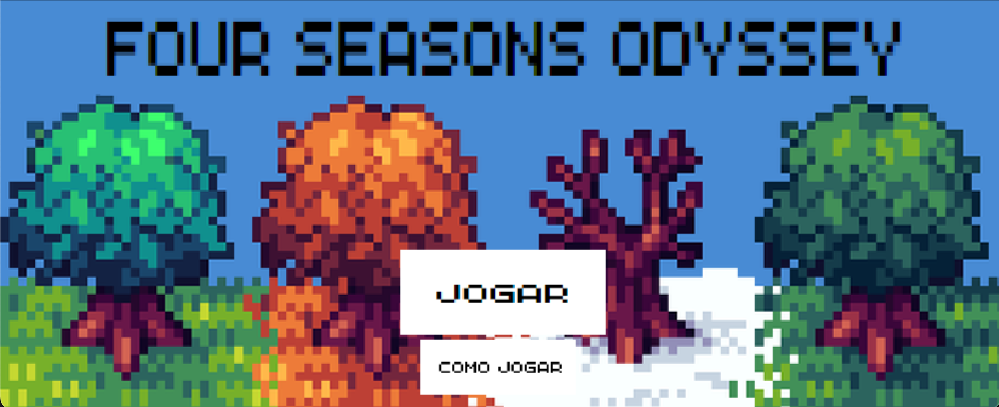
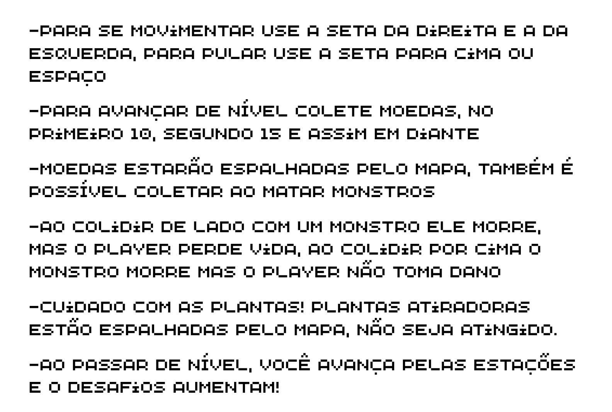
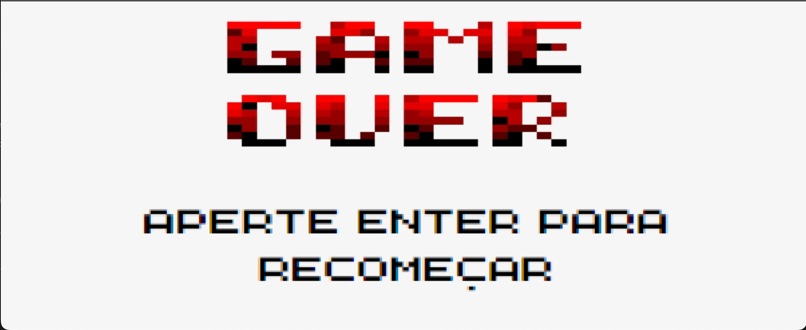

Descrição do Jogo
Four Seasons Odyssey: Journey Through Nature é um jogo de plataforma que leva o jogador por uma aventura emocionante e desafiadora através de quatro estações diferentes. Inspirado no clássico Super Mario, o jogo apresenta uma jogabilidade simples e intuitiva que é fácil de aprender, mas difícil de dominar. Cada estação traz um conjunto único de desafios, com diferentes tipos de monstros e obstáculos para superar. Com gráficos coloridos e uma trilha sonora vibrante, Four Seasons Odyssey é um jogo envolvente e divertido para jogadores de todas as idades que desejam desfrutar de uma aventura emocionante e desafiadora enquanto exploram as maravilhas da natureza.

Gameplay
  Log de desenvolvimento
-
Dia 18:
Começo do HTML, Desenha fundo, jogador e chão do jogo -
Dia 19:
Criação da Classe jogador, movimentação do personagem com gravidade e centralização na janela e desenha árvores -
Dia 20:
Versão inicial do site completa -
Dia 21:
Foram adicioanadas monstros e plataformas, monstros com alguma colisão -
Dia 22:
Plataformas com colisão, monstros morrem e fazem barulho, jogador perde vida para o monstro e adicionou moedas -
Dia 23:
Tela game over e tela inicial adicionadas, som do jogador pulando e pegando coin e planta implementada e causando dano Dia 25:
Tela de início animada, mudanças de CSS no site, header pronto e tela game over com somDia 26:
Código refatorado, começo da implementação de outras fases, site com imagens, vídeos e CSSDia 27:
Teste das heurísticas e alteração de alguns feedbacksDia 28:
Fase outono pronta e tela de instruções implementadaDia 29
Fases verão e primavera prontas e tela ganhou pronta
Instruções
- 1º passo: Baixar o pacote zip
- 2º passo: Fazer a instalação do python (https://www.python.org/downloads/)
- 3º passo: Instalar pygame no terminal do dispositivo, digitando: python -m pip install pygame
- 4º passo: Extrair o pacote zip
- 5º passo: Acessar o diretório em que o jogo está: digite no terminal cd "C:\Users\seu_nome_de_usuário\Downloads\devlife-23-1-projeto-pygame-thiago-penha-e-joao-faraco-main "
- 6º passo: Digite no terminal python 3 jogo.py ou python jogo.py